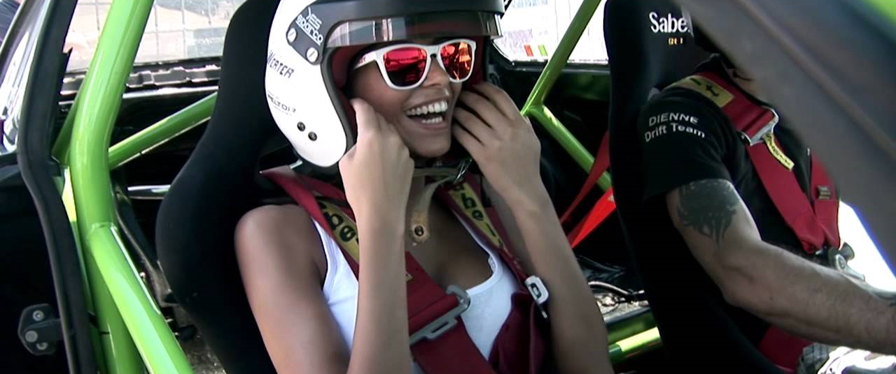
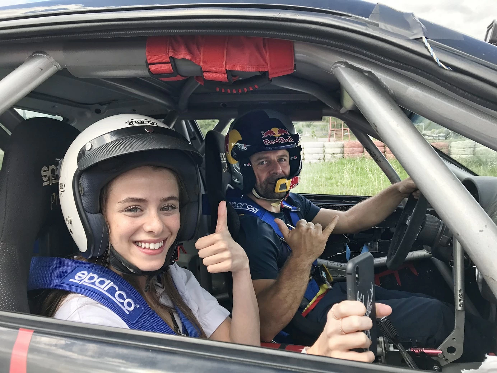

Дрифт-такси – это заезд по специально подготовленной на автодроме трассе на уникальном четырехместном дрифт-автомобиле с профессиональным пилотом. В одной машине могут быть от 2 до 3 пассажиров.
Дрифт-таки предполагает размещение человека на переднем или заднем пассажирских сиденьях автомобиля для дрифта – пассажира пристегивают ремнями безопасности, надевают шлем, и пилот проезжает с ним трассу в режиме боевого заезда. С уверенностью можно сказать, что деньги себя оправдывают!
Во-первых, можно изнутри прочувствовать всю «кухню» тяжелой работы пилота и испытать на себе их постоянные перегрузы во время гонок. Во-вторых, это потрясающий опыт и яркие воспоминания, которые точно останутся на всю жизнь. Да и самостоятельно повторить такое вряд ли получится.
За последние несколько лет тема дрифта стала гораздо популярнее в нашей стране, но, думаю, что самый пик еще впереди. Из-за большого спроса представители направления дрифт-такси постоянно занимаются развитием качества услуг в этой сфере. В первую очередь это, конечно, связано с улучшением технического состояния автомобилей и оперативной работой специалистов, которые всегда имеют под рукой необходимые запчасти.
В отличие от стандартной машины дрифт-кар имеет заблокированный дифференциал, жесткую подвеску, увеличенный выворот колес и мощный мотор (куда тут без него!), способный жечь покрышки на 3-й и 4-й передаче. Серийно машины для дрифта никто не выпускает. Люди этим занимаются самостоятельно или пользуются услугами специальных мастерских. Это своего рода творчество, поэтому двух одинаковых дрифт-каров не бывает.